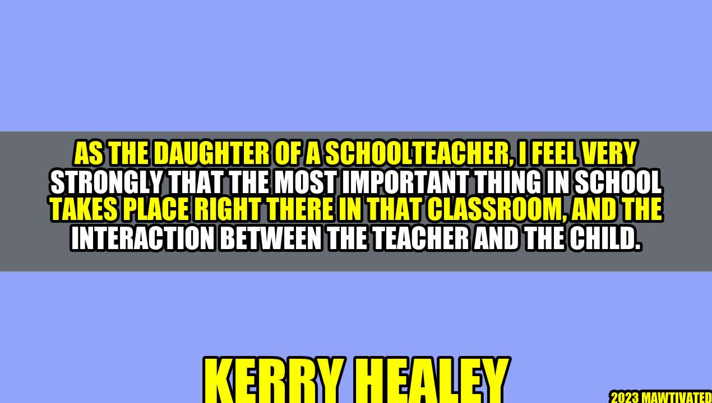

The Magic of Teacher-Child Interaction

Let me share with you Kerry Healey's story, an inspiring story of someone whose life was transformed by a teacher who believed in her:
"Growing up in a single-parent household in a poor neighborhood, I struggled in school and felt like I didn't belong. But then I met Mrs. Johnson, my second-grade teacher. She saw something in me that no one else did, and she made me feel valued. She spent extra time with me after school, giving me the confidence to work harder and dream bigger. She changed my life."
As the daughter of a schoolteacher, Kerry Healey understands the impact that teachers can have on their students' lives. For her, the most important thing in school is not the fancy facilities or the latest technology, but the interaction between the teacher and the child.
The Power of Teacher-Child Interaction
Research has shown that teacher-child interaction has a powerful effect on students' academic and emotional development. When teachers establish positive relationships with their students, they create a safe and supportive learning environment that fosters growth and success.
Academic Development
- Teachers who provide frequent and specific feedback help students improve their learning and self-reflection skills.
- Teachers who use effective questioning and encourage student participation enhance critical thinking and problem-solving abilities.
- Teachers who personalize instruction and provide scaffolding help students achieve their academic goals.
Emotional Development
- Teachers who show empathy and respect create a sense of belonging and self-worth among their students.
- Teachers who foster a growth mindset and emphasize effort over ability promote resilience and persistence.
- Teachers who model positive behaviors and values encourage social and emotional competence.
The bottom line is that teacher-child interaction is not just a nice-to-have, but a must-have. It lays the foundation for learning and life success.
Practical Tips for Enhancing Teacher-Child Interaction
Here are some practical tips for teachers who want to improve their interactions with their students:
- Get to know your students as individuals. Learn their names, interests, strengths, and challenges. Use this information to customize your instruction and feedback.
- Display warmth and enthusiasm. Smile, use positive body language, and greet your students warmly every day. Create a welcoming and inclusive environment.
- Praise effort and progress. Recognize and celebrate your students' hard work, improvement, and resilience. Avoid focusing solely on grades or test scores.
- Be responsive and respectful. Listen to your students' ideas, concerns, and questions. Validate their perspectives and feelings. Offer constructive feedback that is specific and actionable.
- Engage in professional development. Seek opportunities to learn and grow as a teacher. Attend workshops, read articles, and collaborate with colleagues. Continuously improve your practice.
Conclusion: Why Teacher-Child Interaction Matters
In summary, teacher-child interaction is the heart and soul of education. It transforms lives, fosters learning, and creates a sense of community. As Kerry Healey said:
"Teachers have a unique opportunity to shape the next generation through their interactions with their students. Let's make every interaction count."
To make every interaction count, remember these three points:
- Build positive relationships with your students based on empathy, respect, and warmth.
- Personalize your instruction and feedback to meet your students' individual needs and goals.
- Prioritize professional development to continuously improve your practice and stay up-to-date with best practices.
Article Category: Education
SEO Keywords: Teacher-Child Interaction, Academic Development, Emotional Development, Practical Tips
Hashtags: #teacherchildinteraction #academicsuccess #emotionalwellness #practicaltips #educationmatters
Curated by Team Akash.Mittal.Blog
Curated by Team Akash.Mittal.Blog
Share on Twitter Share on LinkedIn